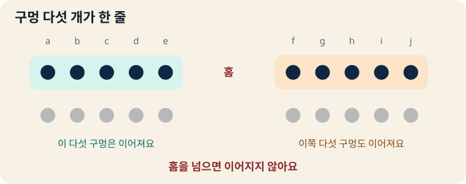
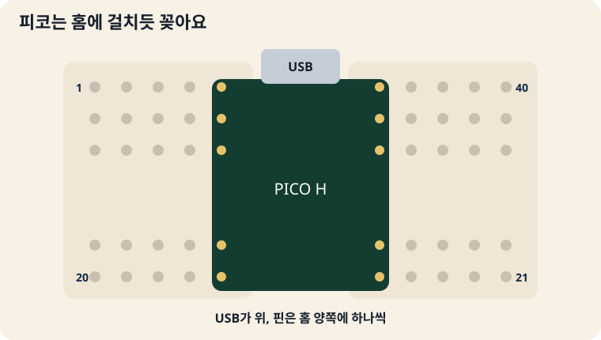

2차시
보드를 켜고 말을 걸기
선을 꽂기 전에 핀 번호 두 종류를 구분하고, Thonny로 초록 LED를 켭니다.
- 핀 번호
- 브레드보드에 꽂기
- Thonny 연결
- 초록 LED 다섯 번
01
핀 번호
한 줄코드에 쓰는 이름은 GP 번호이고, 보드 가장자리를 세는 것은 핀 번호입니다. GP14는 가장자리 19번입니다. USB를 위로 두면 왼쪽 위가 1번, 오른쪽 위가 40번입니다.
| 부품 | GP | 가장자리 |
|---|---|---|
| 바깥 LED | 14 | 19, 짧은 다리는 GND 18 |
| 버튼 | 15 | 20, 반대편은 3V3인 36 |
| 부저 | 13 | 17 |
| 센서 신호 | 28 | 34. 전원은 VBUS 40 |
| 초록 LED | 25 | 보드 위. 핀에 안 나옴 |
02
꽂기
꽂으면 안 되는 곳. 핀 40 VBUS와 핀 39는 5V입니다. 버튼이나 GP 핀에 닿으면 보드가 상합니다. 핀 37은 전원 끄기용이라 비웁니다. 3V3과 GND를 선 하나로 바로 잇지 않습니다. 선을 바꿀 때는 USB를 뽑습니다.
브레드보드
그림처럼 홈 왼쪽 다섯 구멍은 서로 이어지고, 오른쪽 다섯 구멍도 서로 이어집니다. 홈을 넘으면 끊깁니다. 피코는 그 홈에 걸치듯 꽂습니다. 오늘은 피코만 USB로 연결합니다.


손으로 꽂는 장면
영어 영상입니다. 피코를 가운데 홈에 눌러 끼우는 장면만 보면 됩니다. 영상 뒤에 나오는 LED와 버튼 핀 번호는 우리 수업과 다릅니다. 불은 다음 차시 그림의 GP14를 따릅니다. 영상이 안 열리면 위 그림만 따라도 됩니다.
브레드보드에 꽂는 영상 보기03
Thonny
- Thonny를 엽니다.
- USB로 연결
충전 전용 케이블이면 보드를 못 찾습니다.
- 인터프리터
오른쪽 아래에서 MicroPython (Raspberry Pi Pico)를 고릅니다. Pico W나 Pico 2가 아닙니다.
- 셸 확인
>>>옆에print('안녕')을 치고 Enter. 안녕이 나오면 연결된 것입니다.
처음이라 드라이브만 보일 때. BOOTSEL을 누른 채 꽂으면 RPI-RP2가 생깁니다. 피코 2는 RP2350이라는 이름이 뜹니다. Install MicroPython에서 보드를 Raspberry Pi Pico로 고릅니다.
04
초록 LED
onboard_blink.py
from machine import Pin
import time
led = Pin(25, Pin.OUT)
for i in range(5):
led.on()
print(i + 1, "번째 켜짐")
time.sleep(0.4)
led.off()
time.sleep(0.4)
print("끝")
Pin(25, Pin.OUT)은 25번을 출력으로 정합니다. 피코 W 예제의Pin("LED")는 쓰지 않습니다.on은 켜기,off는 끄기,sleep(0.4)는 0.4초 기다리기입니다.- 다음 차시부터는
while True라서, 고치기 전에 정지 버튼을 누릅니다.